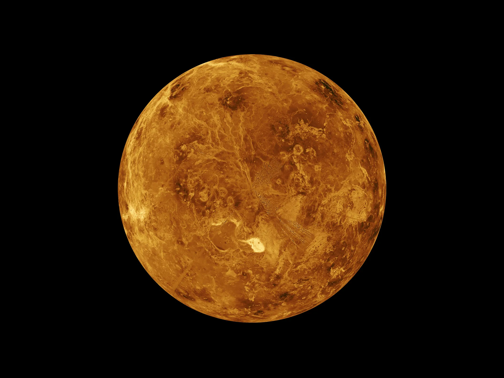

Venus is the second planet from the Sun and is often called Earth's "sister planet" due to their similar size and composition. Despite these similarities, Venus has evolved into a very different and hostile world.
Venus has been observed since ancient times as one of the brightest objects in the night sky. It was named after the Roman goddess of love and beauty, likely because of its brilliant, luminous appearance.
Venus has a diameter of about 12,104 kilometers, making it almost the same size as Earth. It orbits the Sun at an average distance of about 108 million kilometers, and it is the closest planet to Earth at certain points in its orbit.
Venus has a thick, toxic atmosphere made mostly of carbon dioxide, with clouds of sulfuric acid. This creates an extreme greenhouse effect, trapping heat and making Venus the hottest planet in the solar system, with surface temperatures around 465 degrees Celsius, hot enough to melt lead.
Beneath its thick clouds, Venus has a surface shaped by volcanic activity, with more volcanoes than any other planet in the solar system. It also features vast plains, highland regions, and deformed mountain belts created by geological stress.
Venus rotates in the opposite direction to most planets, a phenomenon known as retrograde rotation. A day on Venus is longer than its year, taking 243 Earth days to rotate once but only 225 Earth days to orbit the Sun.
Venus has been explored by numerous missions, including the Soviet Venera probes, which were the first to land on another planet, and NASA's Magellan mission, which mapped its surface using radar. Several upcoming missions aim to study its atmosphere and geological history in greater detail.